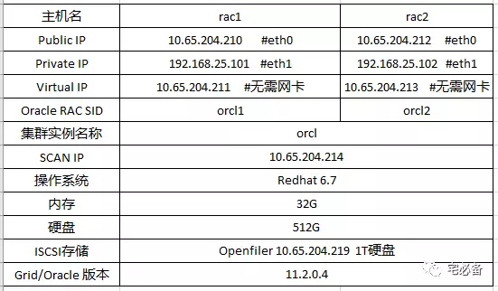

OPENFILER安装
这个专题说的是如何搭建Oracle 11.2.0.4 RAC 环境
包括如下章节:
- OPENFILER安装
- OPENFILER配置
- UDEV的设置
- RID及ORACLE环境配置
- GRID的安装与配置
- ORACLE软件的安装
- ORACLE数据库安装
数据库规划

第一章节讲openfiler的安装
ISCSI介绍
iSCSI利用了TCP/IP的port 860 和 3260 作为沟通的渠道。透过两部计算机之间利用iSCSI的协议来交换SCSI命令，让计算机可以透过高速的局域网集线来把SAN模拟成为本地的储存装置。
下面介绍一些常用的ISCI术语
ISCSI Target
即运行ISCSI协议的服务器，这次我们使用Openfiler来模拟ISCSI协议
iSCSI Initiator
即ISCSI客户端，Redhat中可使用iscsi-initiator-utils包充当iSCSI Initiator来连接服务端
Openfiler介绍
Oracle RAC 中ASM需要用到共享存储，这里我们使用openfiler 来架设ISCSI共享存储
Openfiler是一个基于Linux的系统，可用来搭建ISCSI，FS,CIFS,NFS,FTP等服务器
官网网站:
Openfiler安装
首先我们从官网下载openfiler安装镜像
https://www.openfiler.com/community/download
新建虚拟机安装openfiler系统
- CPU: 4核
- 内存: 16G
- 硬盘: 100G+1T
- 网卡:10.65.204.219
从光驱启动
选择下一步
选择键盘模式
选择YES
选择安装系统的硬盘
注意这里我们只勾选100G硬盘的那个
选择YES

配置网卡信息
IP:10.65.204.219
子网掩码:255.255.255.0
网关:10.65.204.1
DNS:10.65.1.53(可选)
选择时区
设置root密码
开始安装
安装完成

开机界面
这样OPENFILER的安装完毕，下一章节讲OPENFILER的配置，尽情期待。